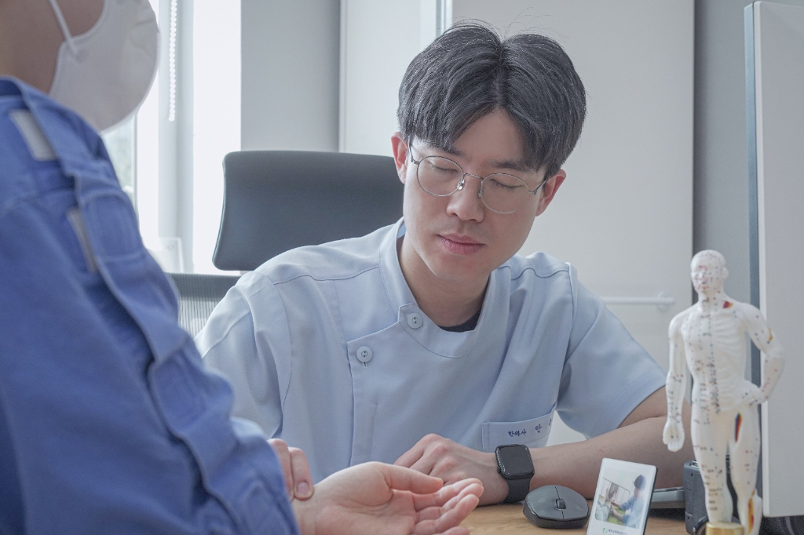
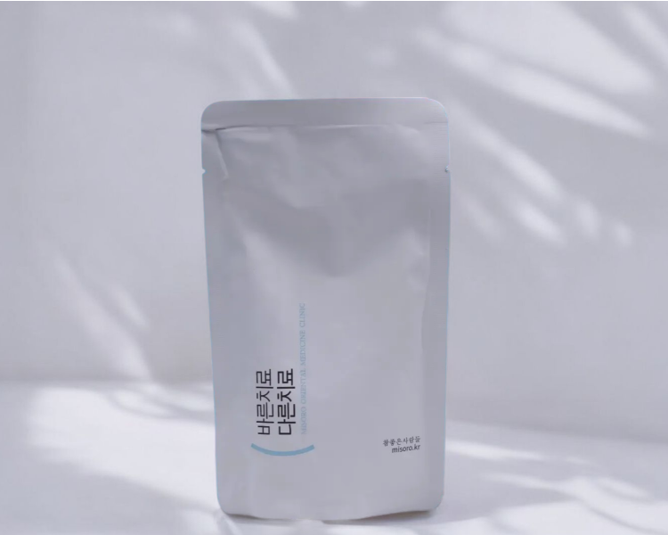
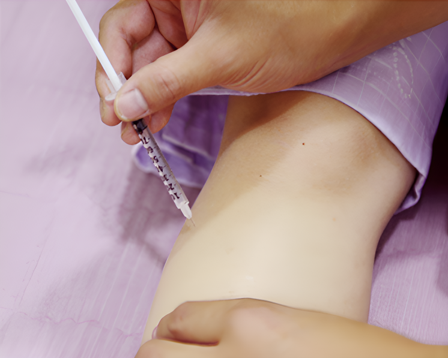
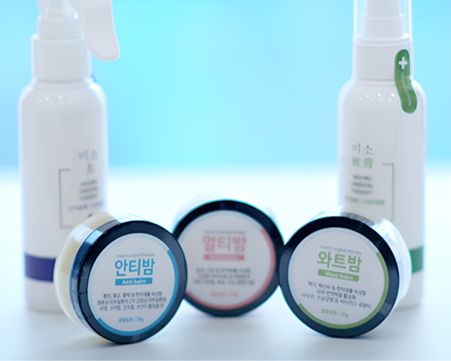
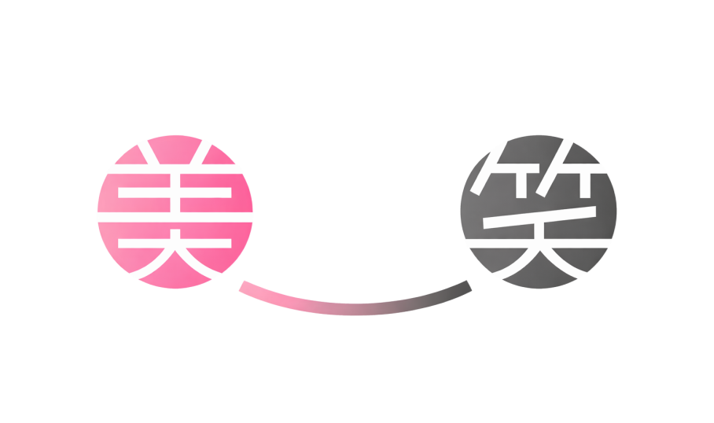
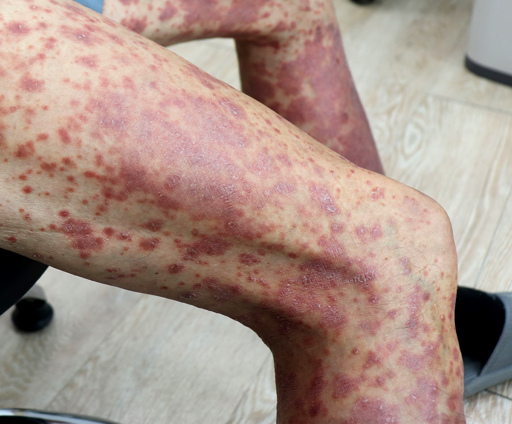
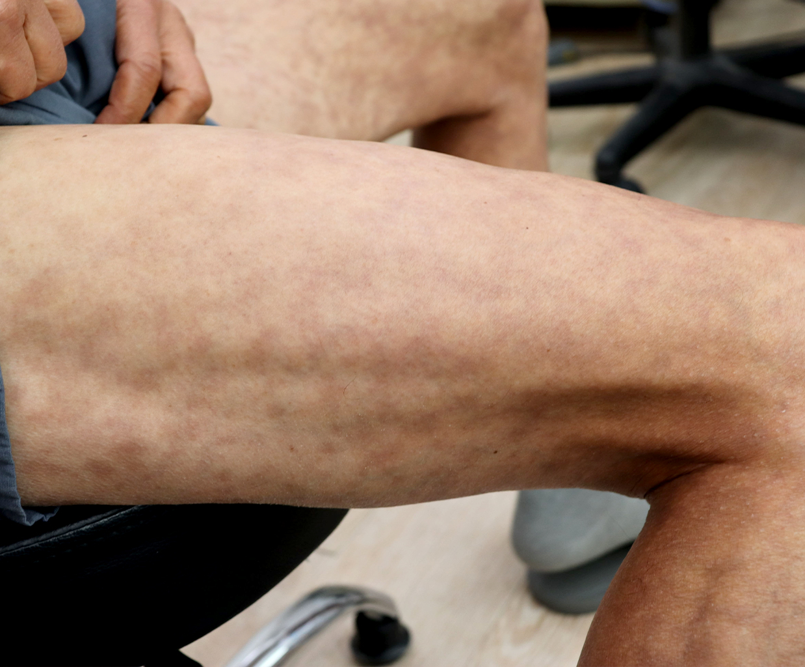
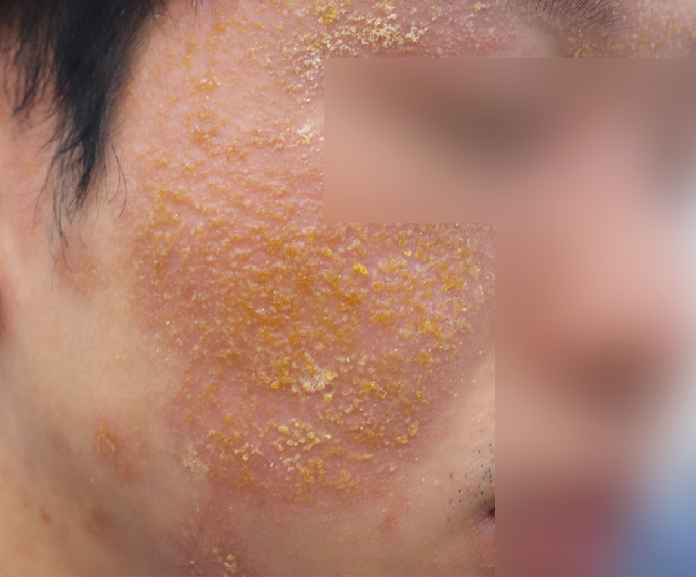
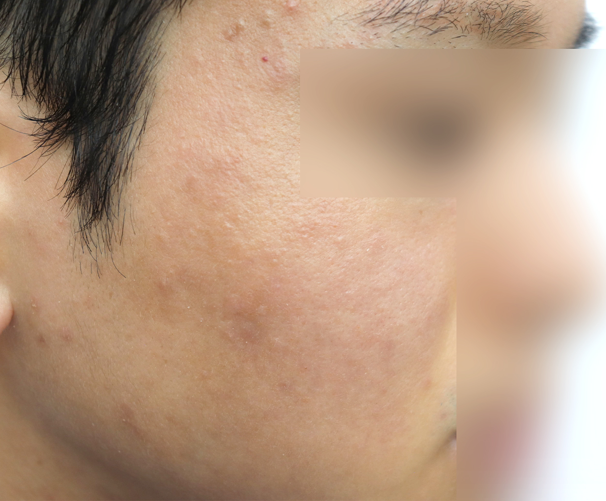
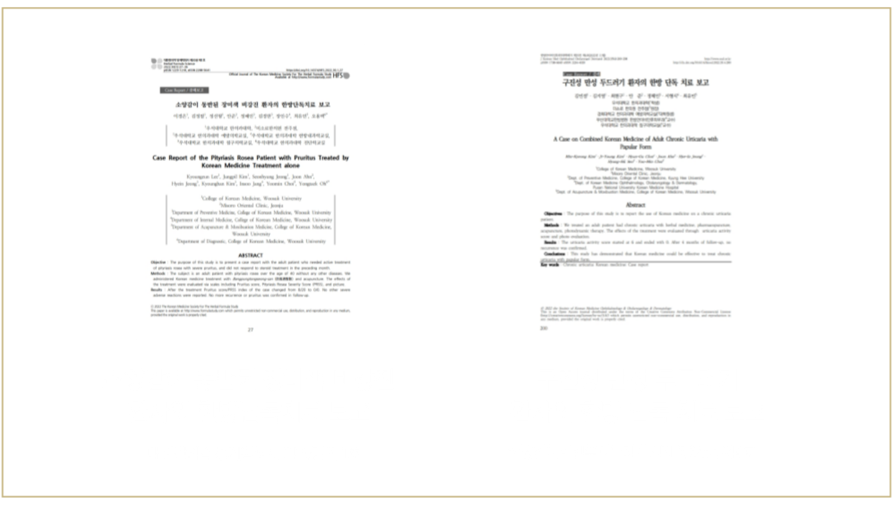

"여기까지 오시느라,
그동안 정말 고생 많으셨어요"
좋아졌다 나빠졌다 반복되는 만성 피부·호흡기 질환,
미소로한의원에서 끊어낼 수 있게 도와드리겠습니다.
좋아졌다 나빠졌다 반복되는 만성 피부·호흡기 질환,
미소로한의원에서 끊어낼 수 있게 도와드리겠습니다.

어떻게 하면 더 빠르게 좋아질 수 있을지,
한 분 한 분 진심으로 고민하며 치료합니다.
면역력과 재생 기능이 저하된 상태에서 증상만 치료한다면
"밑 빠진 독에 물 붓기"입니다.
미소로한의원 전주점
집이 그렇게 넉넉한 편이 아니었고, 작은 시골도시에서 자랐습니다. 그럼에도 부모님 사랑 속에 컸고, 부모님은 1~2년에 한 번 정도는 꼭 녹용을 구해 한약을 지어주셨어요. 그때마다 찾아가던 단골 한의원이 있었습니다.
거기 계시던 원장님은 어린 제 눈에 정말 멋있어 보였어요. 한약을 먹고 나면 몸이 눈에 띄게 좋아지기도 했고, 진료 끝에 공부 열심히 하라며 따뜻하게 건네주신 응원의 말들이 어린 제 마음에 오래 남았습니다. 나중에는 원장님이 지역사회에서 기부를 하거나, 잠재력 있는 학생들을 후원하는 모습을 알게 되었습니다. 그때부터 "나도 한의사가 되어야겠다. 사람에게 건강을 선물하면서 동시에 선한 영향력을 미치고, 지역사회에 기여하면서 살아갈 수 있겠다" 생각했습니다.
피부나 호흡기질환은 여러 가지 이유로 어렸을 때부터 오랫동안 앓게 되는 경우가 많아요. 알음알음 누군가의 소개로 혹은 집에서 가까운 병원들을 찾아서 관리하고 치료해 보다가 결국 한의원에 찾아오시게 되는데요. 저희 전주 미소로한의원이 어린 시절 저에게 힘이 되어 주셨던 원장님의 마음처럼 찾아와주시는 분들에게 위로와 도움이 되기를 바랍니다.
대표원장 안준 올림

15일의 약속, 맞춤 한약
몸의 막힌 곳을 뚫어 면역력을 스스로 회복하게 돕습니다.
환자의 컨디션 변화에 맞춰 15일마다 약을 새롭게 처방합니다.

증상에 따른 정밀 치료
약침 및 광선 치료로 진정 및 재생
코 점막 침 자극과 배농치료로 염증 배출

일상의 끊김 없는 관리
한의원 밖에서도 치료 효과가 유지되도록 증상별 맞춤 외용제를 처방합니다.

괜찮아질 거라는 말이 쉽게 믿어지지 않았던 분들께,
백마디 말보다 결과로 보여드려야 합니다.


질환 : 건선 연령/성별 : 70세/남성 치료기간 : 7개월


질환 : 아토피 연령/성별 : 27세/남성 치료기간 : 5개월
질환 : 아토피 연령/성별 : 27세/남성 치료기간 : 5개월
질환 : 건선 연령/성별 : 70세/남성 치료기간 : 7개월
MISORO YOUTUBE
한의사가 알려주는 건강한 이야기, 시청하기.
나의 질병을 알고 나면 건강에 한발짝 더 다가갈 수 있습니다.

모두의 처방이 다른, 치료의 생각이 바른
주차는 주차 타워를 이용해 주세요.